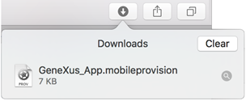

HowTo: Publishing an application to the Apple App Store
This document is intended to guide you in the process of publishing (for the first time or update) your Apple applications to the Apple Store.
Prerequisites
- GeneXus 16 upgrade 8 or higher must be used to deploy applications to App Store.
Ref.: "Starting April 2020, all new apps and app updates for iPad will need to be built with the iOS 13 SDK and support the all-screen design of the 12.9-inch iPad Pro (3rd generation)." https://developer.apple.com/news/?id=09242019a, Apple Requirements - As from April 2021, GeneXus 17 or higher will need to be used to upload applications to the App Store.
Ref.: "Starting April 2021, all iOS and iPadOS apps submitted to the App Store must be built with Xcode 12 and the iOS 14 SDK." https://developer.apple.com/ios/submit/, Apple Requirements - You need a Mac computer to be able to compile and publish an Apple application.
- Get (if not already have one) an Apple Developer account. See Apple Developer site for details.
- Get (if not already have one) a Distribution certificate for the above Apple Developer account in the Mac used for compilation.
During the publication process, you will need to interact both with Apple Developer and iTunes Connect sites and also with the XCode project (generated by GeneXus) in the Mac.
Publishing steps
1. Test your application thoroughly
It's highly important to test the application before uploading it to the store. The validation process of Apple takes a while, if you need a second emergency update, consider that the end-users do not have the application fixed instantaneously.
Tip: Development Team ID property is required for uploading the application to the App Store. You may set it during the test process.
2. Choose the icon and images that you will use for the publication
You will need (not counting optional).
Screenshots
- Format: JPEG, JPG, TIF, TIFF or PNG.
- Resolutions (at least one for iPhone and one for iPad):
+ iPhone: 960x640, 960x600, 640x960 or 640x920 pixels.
+ iPad : 1024x768, 1024x748, 768x1024, 768x1004, 2048x1536, 2048x1496, 1536x2048 or 1536x2008 pixels.
- Considerations: At least 72 DPI and in the RBG color space.
Application Icon
- Format: JPEG, JPG, TIF, TIFF or PNG.
- Resolutions: 512 x 512 or 1024 x 1024 pixels.
- Considerations: at least 72 DPI, in the RGB color space, and it cannot be scaled up.
For detailed information, refer to App Store icon, app preview, and screenshots overview
3. Install the Distribution certificate on your Mac (if not already installed)
This step is required once for each user account on the Mac computer used for publishing, not for every application you want to publish.
Download the Distribution certificate from Certificates, Identifiers & Profiles (Apple Developer site) by going to Provisioning Profiles > Distribution. Once downloaded, double-click the .cer file in order to add the certificate to the Mac Keychain -this must be done with the user configured in the Apple Generator, for the certificate to be added to the login of that user.
Note: To access the Apple Provisioning Portal menu you must be logged in (to do that go to Apple Dev Center > Login).
4. Create a new application in the Apple Developer site (if not already created).
Go to Apple Developer site > Identifiers > App IDs and create an App ID for your application (New App ID button, the "+" symbol on the right-upper corner).
Provide the following information:
- Description
e.g.: 'Sales'. - Bundle Seed ID (or App ID Prefix)
Select your Team ID. - Bundle Identifier (or App ID Suffix)
e.g.: com.genexus.Sales - (Optional) Select your App Services
e.g. Push Notifications if the app uses it.
Click on the Continue button.
In the next screen, check if the information is correct and click on the Register button, and then Done.
5. Create a Distribution Provisioning Profile for the created App ID (if not already created).
Go to Provisioning Profiles > Distribution > New Profile (the "+" symbol on the right-upper corner). You'll need to complete a four-step wizard with the following information.
- Type of distribution profile
In the Distribution section, select the 'App Store', and click on Continue.
- App ID
Select the App ID created in step 4, and click on Continue.
- Signing certificate
Select your Apple Distribution certificate, and click on Continue.
- Profile name
It can be any. It also offers a summarize of the previous steps. Finally, click on Continue.
In this step, you can download the provisioning file by clicking on the Download button, and skip step 6.
6. Install the Distribution Provisioning profile on your Mac
Go to Provisioning Profiles > Distribution.
Select the Profile Name created in 5 and click on the Download button, and then double-click the .mobileprovision file.

7. Generate application binaries
Open the application knowledge base with GeneXus, and configure the following properties:
- Native Mobile generator properties > Apple Specific
- Execution Type property
- Build for Distribution (Local)
- Execution Type property
(It is located in the "Preferences" tab, inside the Environment, under the "Front End" node, in the "Apple Specific" group of properties).
- Main object properties > Apple
- Apple Version Code & Apple Version Name properties
- Must have the same value, and they have to coincide with the app version created later in step 8. - Apple Bundle Identifier property
- It is the Bundle Identifier created in step 4.
- Apple Version Code & Apple Version Name properties
Build the main object. To do it, open the generated project in your Mac, located by default in Documents/Projects/<gx_main_object_name>/<gx_main_object_name> (double-click on the .xcodeproj file, or .xcworkspace if exists).
- Go to Product > Archive.
Build target must be set to Generic iOS Device in order to option Archive be enabled.
A build will be performed to generate the archive file. After that, a message Build Succeded should be displayed, and the created archive should be shown in the Organizer.
- Go to View > Navigators > Show Report Navigators
Check that no signing and validation warnings appear at the end of the log.
Verify that the application was signed using the Distribution certificate.
Note: If you get a warning because the UserControls folder doesn´t exist in the same location as the XCode project create it and go to Product and Archive again.
8. Publish the app
At this point, you are ready to upload the application to the App Store. Go to the iTunes Connect site, log in using your Developer account, and go to Manage Your Applications.
- If you are creating a new application
Click on Add button ("+" symbol on the left-upper corner) and then New App option. This action will access a wizard to create a new application.
- If you are updating an existing application
Click on your application icon. The detail information will be displayed. Click Add Version or Platform button, and select iOS.
The information needed is:- Version number
Must be the same as the main object property iOS Version Name (see step 7 above). - What's New in this Version
Details on what had changed in the new version.
- Version number
Go back to the Xcode project on your Mac.
- Select Organizer on the Xcode project (go to Window > Organizer).
- Select the archive file generated in step 7
- Click the Validate button. It takes several minutes and no feedback is given in the meantime (it may appear that the application is not responding)
- Log in with your Developer account.
- Select the application version created in previous steps
In the Application's combo-box select the version. The Identity combo-box should display a Distribution profile. - Click the Next button.
A success message must be displayed. Otherwise, an error list shows up.
- Click the Submit button in Organizer.
Be sure the validation was successful. Select your application and upload the binaries.
9. Application approval
At this time your new or updated application was submitted to the Apple Store for approval (in 'Waiting for Review' state).
There is little you can do but wait for news from Apple.
Good luck!
Additional information
Videos
 Prototyping features and Deployment of applications for Smart Devices
Prototyping features and Deployment of applications for Smart Devices